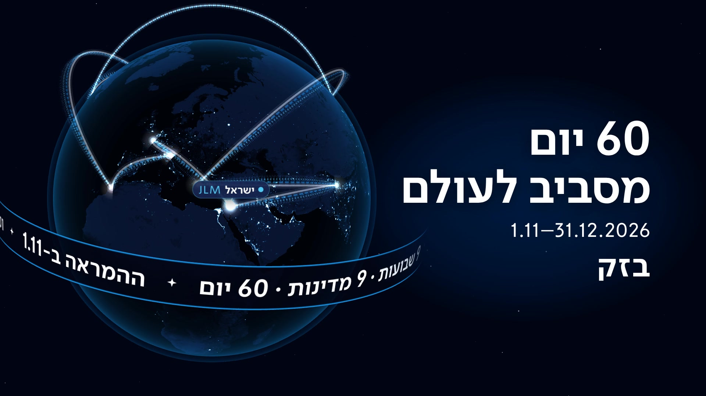
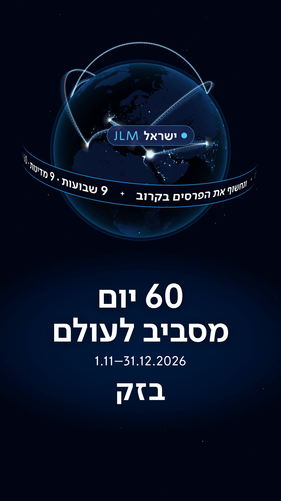
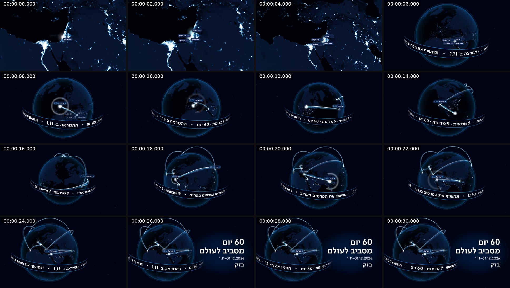
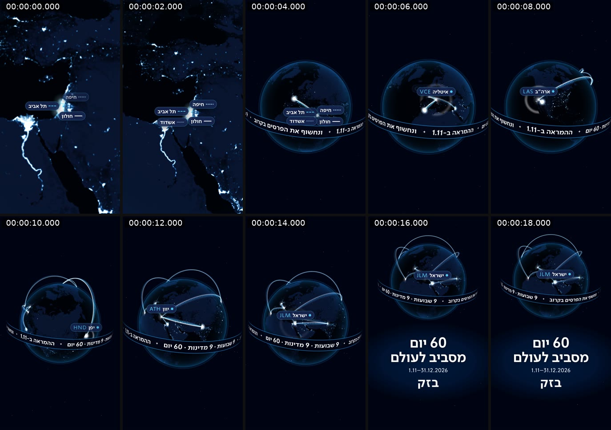
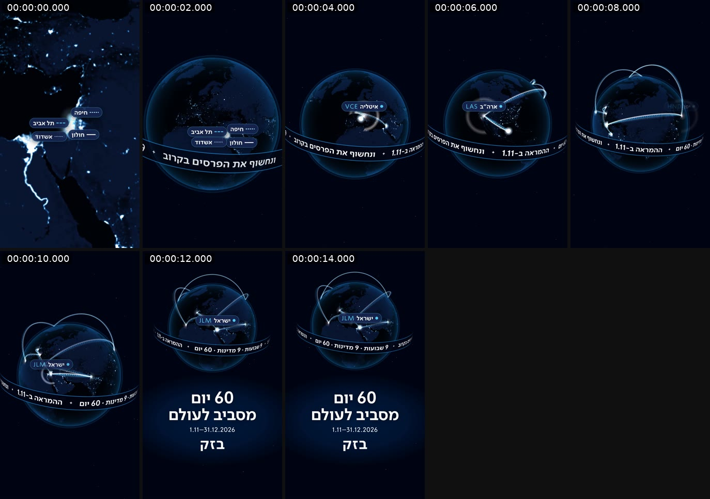

טיזר גלובוס הלילהדמו
כדור הארץ בלילה עם אורות הערים, ארבע קשתות מחולון, תל אביב, חיפה ואשדוד שטסות לפי הסדר דרך תשעת היעדים, כל יעד נדלק עם שם המדינה וקוד שדה התעופה, ורצועת מסר שעוטפת את הגלובוס. בסוף חוזרים לישראל: "60 יום מסביב לעולם", 1.11–31.12.2026 ו"בזק".
שלוש גרסאות: 16:9 של 32 שניות, 9:16 של 20 שניות (קומפוזיציה נפרדת, לא חיתוך), וגרסת וואטסאפ של 15 שניות. קובצי הווידאו לא נשמרים במאגר; נבנים מחדש בפקודה אחת (ראו README.md).
פוסטר


דף מגע · תמונה כל 2 שניות

9:16 · 20 שניות

וואטסאפ · 15 שניות

איך בונים
node scripts/render.mjs all && node scripts/qa.mjs
הפתיחה מ-Google Earth Studio נכנסת לתיקייה opening/ ומתחברת לגלובוס לבד; ההסבר ב-README.md.